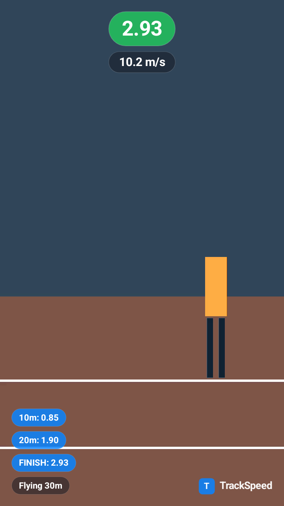
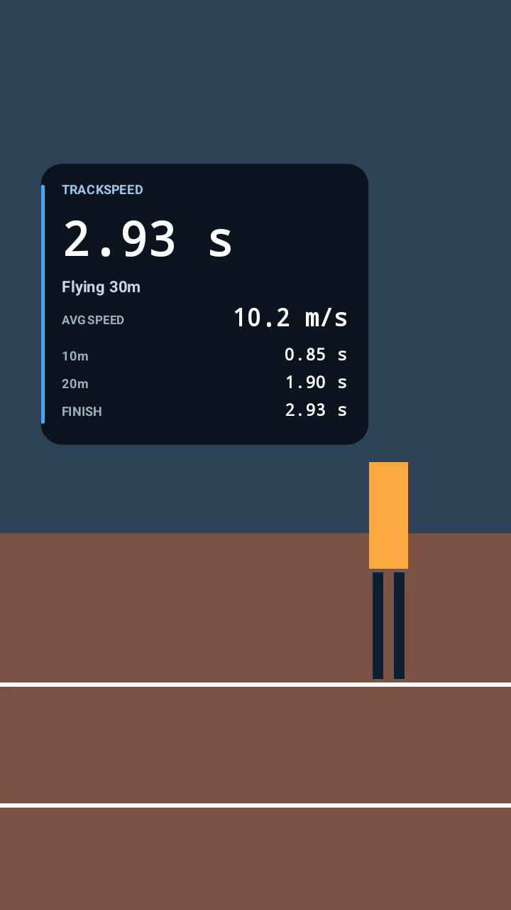
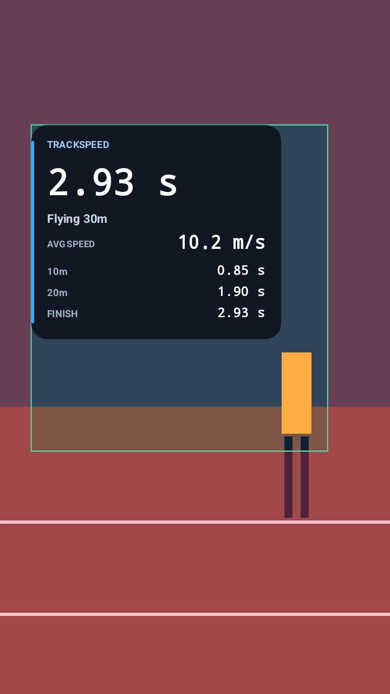
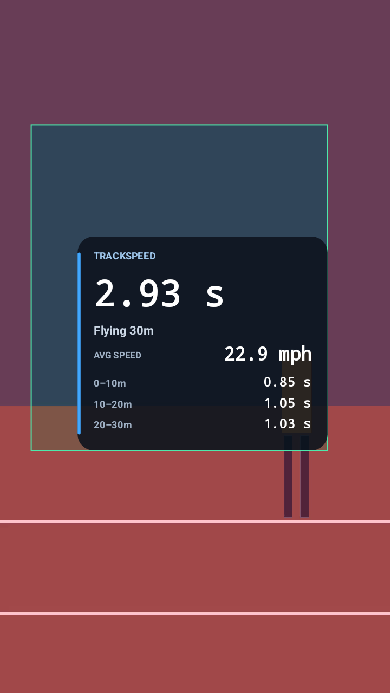
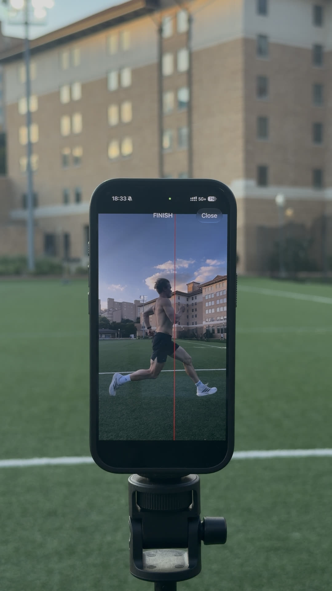
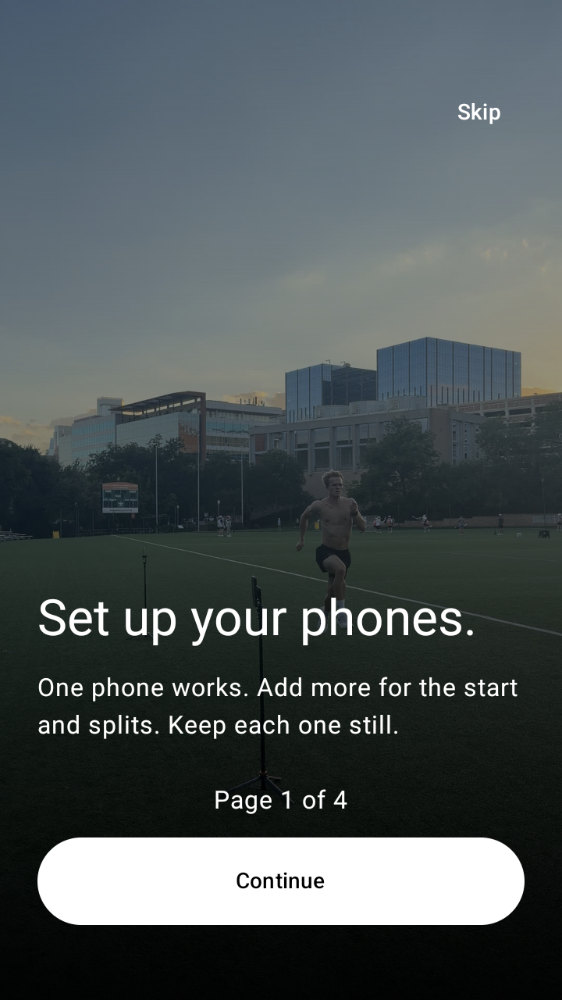
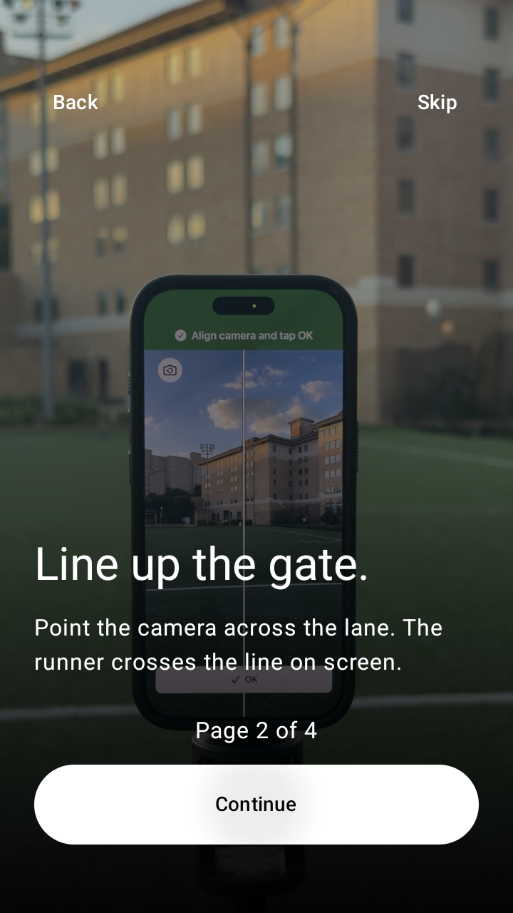
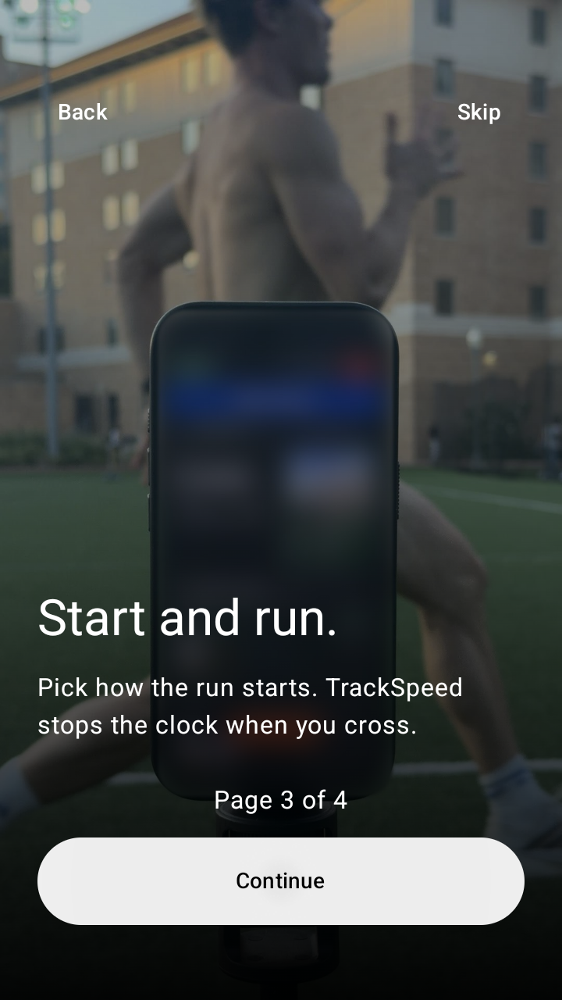
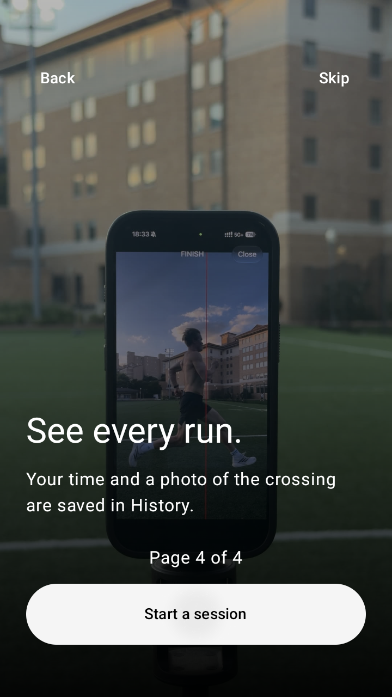
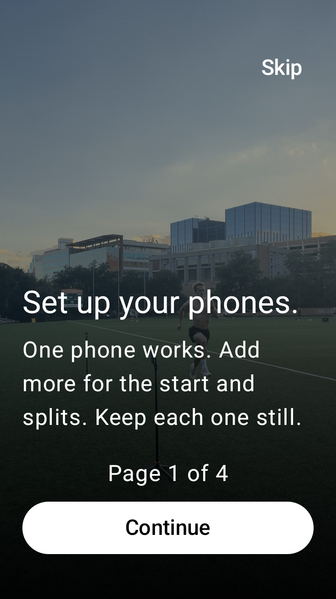

Actual Android Canvas renders, decoded Media3 exports and Compose screenshots. Synthetic video fixtures only. iPhone overlay changes are still pending coordination.
Parity report and remaining iPhone scope
Shown at phone scale. The “Before” sample uses the previous native layout with the same fixture data. The new output keeps time, measured average speed and splits grouped.



The mph example shows segment durations with distance intervals. Guides are preview-only. Preferences persist on Android.

Portrait and landscape exports retain their intended display orientation. The social version fits landscape footage into 9:16 and uses the upper letterbox for a compact header.
Layout comparison using an existing product photo; not a live screen capture. Android preserves the full image aspect. Compact heights retain the earlier long-edge budget.
Before

After / proposal
Before
After / proposal
Before
After / proposal
Four-page guide on a 360×640 dp emulator; the last sample uses 1.6× text scale. Continue, Skip and final Start a session were tested.





The shared guide uses 18% top, 35% bottom, 8% left and 16% right as a conservative design inference. It is not a platform screenshot or universal safe-zone promise. Meta Stories and Reels official indexed guidance describes 14% top, 35% bottom and 6% sides. TikTok varies safe zones with captions, anchors, aspect and LTR/RTL. Review placement with actual footage before sharing.